당분간은 음식 포스팅이 쭉쭉 올라가겠군욤
찔금찔금 여행후기 네이버에 업로드 하고있는데
이게 당췌 뭐가뭔지 @_@
우선 음식사진 방출합니다~ :D
16박17일 북유럽4개국에서의 먹부림(.....이라기엔 여행이 넘 처절했음^^;;;)
덴마크 - 코펜하겐
............북유럽 물가를 넘 우습게 봤어요 ;ㅂ;
세상에 영국보다 비싼나라가 있었다니;;;;
게다가 화폐단위도 낯설어서 + 여행초반의 어리숙함까지;;;
햇반/컵라면 등 아무것도 안들고 간 저와 동생곰은
덴마크에서 3일내리 아침저녁으로 빵만 뜯었다능;;;
도착한날 저녁
호스텔 공동주방에서 만난 러시아청년이 적선해준 음식
감자 / 토마토 / 엄청나게 짠 괴기;;;
근처 슈퍼에서 빵과 라즈베리 잼을 사와서 뜯어먹고 있던 와중
우연히 눈이 마주쳤는데 다가와서 저 접시를 주고갔당
(이 총각 영어가 엄청 어설퍼서 알아먹느라 고생했는데
결국 내용은 자기네그룹(4명)이 요리를 너무 많이해서 남은건데
버리긴 아깝고 먹을래? - 였음)
내가 그리 굶주려 보였나^^;;;
여튼 감사히 냠냠
핀란드를 제외한 3국에서는 세븐일레븐 편의점이 정말 많이보였다+_+
음료수코너 기웃거리다 사먹어본 쪼코우유 마시쏘///
뉘하운 거리에있는 레스토랑에서 주문한 오픈샌드위치
덴마크에 왔음 오픈샌드위치를 먹어야 한다!!!!
위에 사진이 내가 시킨것 - 첨에 빵이없는줄 알고 놀랐는데
고기밑에 숨어있었다
맛은 있었는데 저렇게 샌드위치 두개에 콜라두잔해서
한화로 4만원 넘게 나온듯...........OTL
이틀연속 아침점심저녁 빵빵빵 - 을 달렸더니
쌀이랑 야채가 넘 먹고싶어서 들어간 japanese 부페
........였는데 주인은 중국사람이고
초밥/롤 종류는 얼마없고 피자/스파게티 등등을 팔고있었다;;;;
노르웨이 - 오슬로
아마 북유럽4개국중 노르웨이가 물가가 젤 비싼듯
전에 어렴풋 물가가 영국의 두배가 스웨덴 이구
그 스웨덴의 두배가 노르웨이 라고 들었는데
처음에는 순서가 노르웨이가 먼저인지 스웨덴이 먼저인지
헷갈렸는데 최강은 노르웨이 맞아요 ㅜㅜ
여긴 한끼해결하기위해 드는 비용이 비싸다못해
황당해 ㅜㅜ 흑흑흑
동네한바퀴 둘러본 결과
밖에서 사먹는것 보다 차라리 호스텔 아침부페를 이용하는게 낫다고 결론
아침마다 꼬박꼬박 티켓구입해서(한사람당 50NOK정도? - 만원살짝 넘는돈;;)
아침을 든든히 먹기로 했음
이번여행댕기믄서 부페의 소중함을 깨달았.....OTL
직접 만든다는 수제케키가 먹고싶어서
또 찾아간 Kaffistova ^^
케키 하나랑 / 요리하나 시켜서 먹었음
케키 느므 달아~~~
찔금찔금 여행후기 네이버에 업로드 하고있는데
이게 당췌 뭐가뭔지 @_@
우선 음식사진 방출합니다~ :D
16박17일 북유럽4개국에서의 먹부림(.....이라기엔 여행이 넘 처절했음^^;;;)
덴마크 - 코펜하겐
............북유럽 물가를 넘 우습게 봤어요 ;ㅂ;
세상에 영국보다 비싼나라가 있었다니;;;;
게다가 화폐단위도 낯설어서 + 여행초반의 어리숙함까지;;;
햇반/컵라면 등 아무것도 안들고 간 저와 동생곰은
덴마크에서 3일내리 아침저녁으로 빵만 뜯었다능;;;
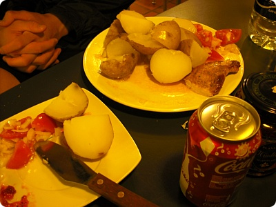
도착한날 저녁
호스텔 공동주방에서 만난 러시아청년이 적선해준 음식
감자 / 토마토 / 엄청나게 짠 괴기;;;
근처 슈퍼에서 빵과 라즈베리 잼을 사와서 뜯어먹고 있던 와중
우연히 눈이 마주쳤는데 다가와서 저 접시를 주고갔당
(이 총각 영어가 엄청 어설퍼서 알아먹느라 고생했는데
결국 내용은 자기네그룹(4명)이 요리를 너무 많이해서 남은건데
버리긴 아깝고 먹을래? - 였음)
내가 그리 굶주려 보였나^^;;;
여튼 감사히 냠냠
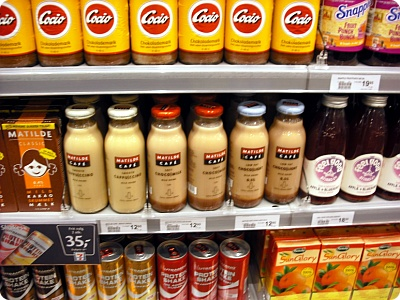
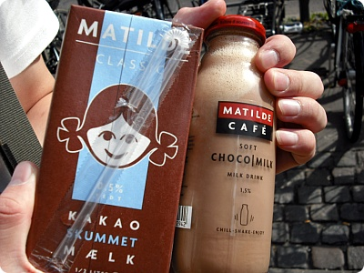
핀란드를 제외한 3국에서는 세븐일레븐 편의점이 정말 많이보였다+_+
음료수코너 기웃거리다 사먹어본 쪼코우유 마시쏘///
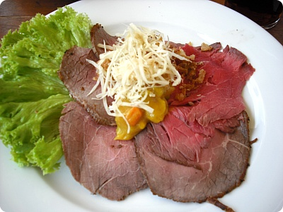
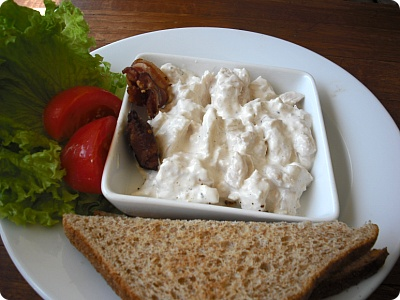
뉘하운 거리에있는 레스토랑에서 주문한 오픈샌드위치
덴마크에 왔음 오픈샌드위치를 먹어야 한다!!!!
위에 사진이 내가 시킨것 - 첨에 빵이없는줄 알고 놀랐는데
고기밑에 숨어있었다
맛은 있었는데 저렇게 샌드위치 두개에 콜라두잔해서
한화로 4만원 넘게 나온듯...........OTL
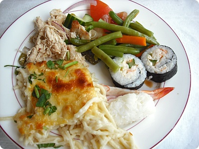
이틀연속 아침점심저녁 빵빵빵 - 을 달렸더니
쌀이랑 야채가 넘 먹고싶어서 들어간 japanese 부페
........였는데 주인은 중국사람이고
초밥/롤 종류는 얼마없고 피자/스파게티 등등을 팔고있었다;;;;
노르웨이 - 오슬로
아마 북유럽4개국중 노르웨이가 물가가 젤 비싼듯
전에 어렴풋 물가가 영국의 두배가 스웨덴 이구
그 스웨덴의 두배가 노르웨이 라고 들었는데
처음에는 순서가 노르웨이가 먼저인지 스웨덴이 먼저인지
헷갈렸는데 최강은 노르웨이 맞아요 ㅜㅜ
여긴 한끼해결하기위해 드는 비용이 비싸다못해
황당해 ㅜㅜ 흑흑흑
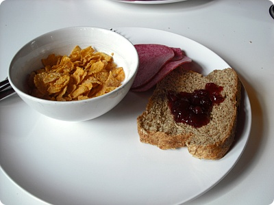
동네한바퀴 둘러본 결과
밖에서 사먹는것 보다 차라리 호스텔 아침부페를 이용하는게 낫다고 결론
아침마다 꼬박꼬박 티켓구입해서(한사람당 50NOK정도? - 만원살짝 넘는돈;;)
아침을 든든히 먹기로 했음
이번여행댕기믄서 부페의 소중함을 깨달았.....OTL
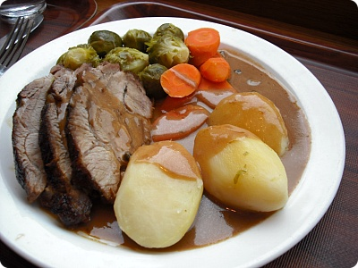
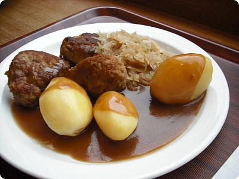
오슬로에서 이틀연속 들린 카페
여행책자에 실려있는 음식점
Kaffistova - 카피스토바
노르웨이산 재료를 쓰는 그릴요리로 노르웨이식 미트볼이 유명하다
돼지고기(위)랑 / 미트볼(아래) 하나씩 주문
카페테리아 형식으로 메인을 고르고
감자랑 야채 버섯등등은 선택^^
여행책자에 '저렴한 가격에 점심을 해결할수있는곳'
이라고 나왔는데 맛은 있었다!!
그리고 가격은 312NOK...........약6만5천원...OTL
(그래도 물은 공짜로 주더라 ㅜㅜ 감샤감샤)
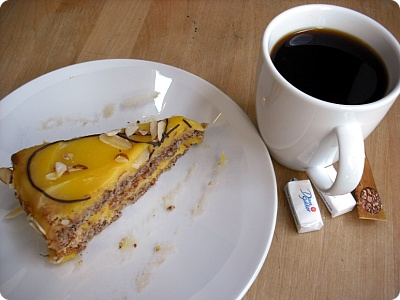
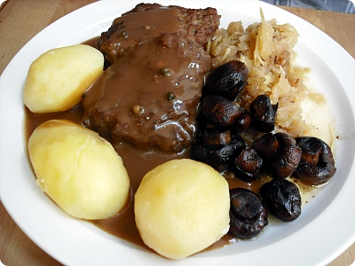
직접 만든다는 수제케키가 먹고싶어서
또 찾아간 Kaffistova ^^
케키 하나랑 / 요리하나 시켜서 먹었음
케키 느므 달아~~~
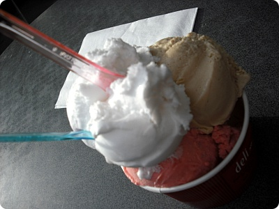
언제나 맛난 아슈크림
그랜드 호텔 옆에있는 아슈크림가게
그랜드 호텔 옆에있는 아슈크림가게